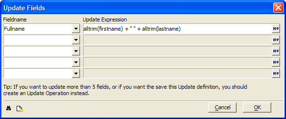

Updating Selected Records in a Table
When viewing a form or browse, you may update selected records in the current table using an Update Operation or when viewing a table through a form or browse.
To update records:
Select Records > Update Selected Records... .

Optionally, click
 to clear the fields of the dialog box.
to clear the fields of the dialog box.Select the field to update from the Fieldname list.
Enter an expression that defines the field's new value in the Update Expression field. Optionally, click
 to use the <span class=Screen>Expression Builder</span> to help you define the expression.
to use the <span class=Screen>Expression Builder</span> to help you define the expression.Repeat steps 3 and 4 up to four more times.
Optionally, click
 to view the Xbasic code generated by this procedure.
to view the Xbasic code generated by this procedure.Click OK to proceed with the update or Cancel to quit without updating.
See Also